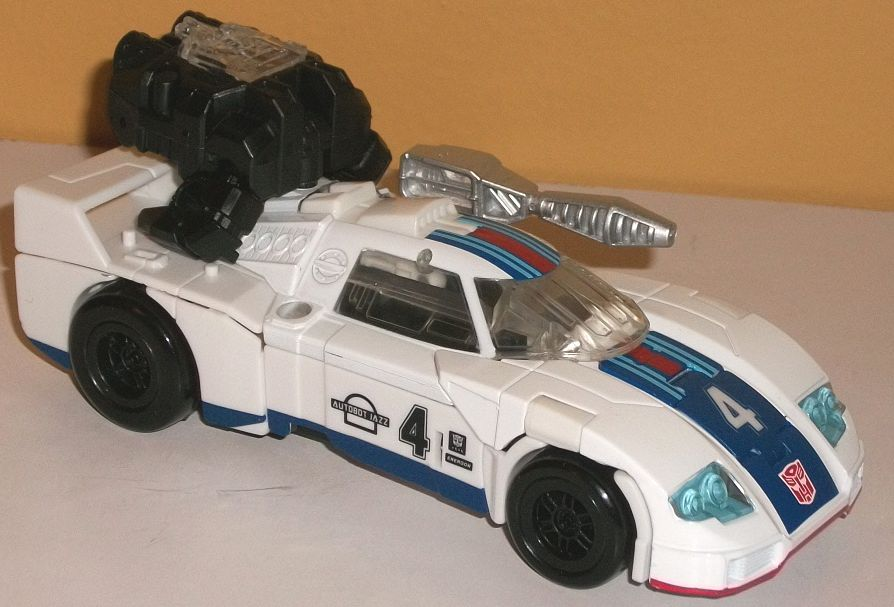
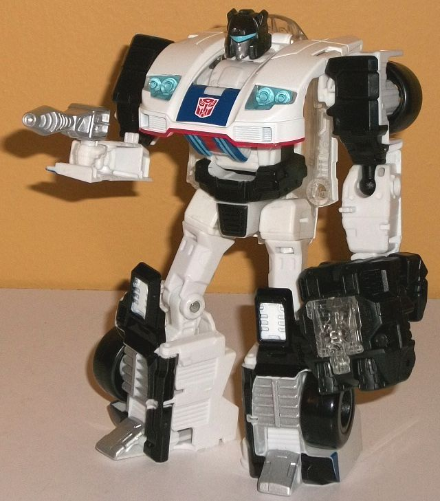
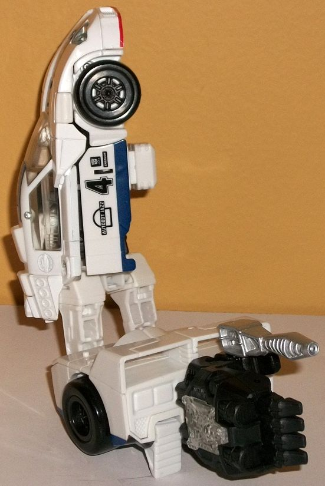
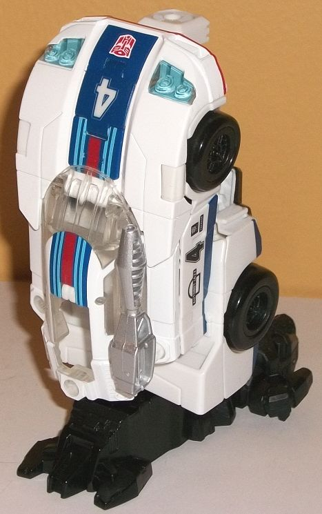

Allegiance
: Autobot
Size
: Deluxe
Difficulty of Transformation to Robot:
Medium
Difficulty of Transformation to Leg
:
Very Easy
Difficulty of Transformation to Arm
:
Easy
Color Scheme
: White, black, clear
plastic, and some silver, dark blue, moderately light blue, dark red, light
blue, and transparent light blue
Rating:
8.8


For his PotP version,
Jazz's alternate mode edges away from his traditional sportscar mode and
more towards a race car. He's still curvy for the most part in this mode,
with a very round roof and front end, but the back end has a raised spoiler,
and the general engine details on the rear portion of his middle section
definitely give off a "race car" vibe. There's no robot mode extras at
all here unless you count some of the hinges you can see inside the clear
windows, and the proportions are pretty spot-on, overall. Jazz does come
with two accessories, though. The first is a standard PotP "Prime armor"
piece that can peg into the middle of the roof in this mode, though as
always, the Prime armor looks odd because it's so obviously just the combined
mode fist with two thumbs and a takeaway clear piece you can insert a Prime/Titan
Master into instead. Jazz also has a simple silver gun, which can be stored
in that center port or on similar-sized ports on the top of the side sections
of this mode. (There's also four pegs near the back end for a Prime or
Titan Master to stand on in this mode.) The mold detailing is a bit sparse,
as you'd expect for such an aerodynamic alt mode, but there's still panel
lines here and there to break things up. The front round headlights are
detailed very well, along with vents on the front bumper. There's also
small panels along the rear sides, including the aforementioned exhaust
pipes. On the back end there's also taillights and a rear bumper, though
unfortunately there's no paint back there at all. It's unfortunate as this
mode does have a LOT of white--as you'd expect for a Jazz toy-- but there
should have been some paint detailing on the rear spoiler or something
else back there to break up all that white. However, the front two-thirds
of this mode are pretty well broken-up color-wise. The dark blue stripe
down the middle of the front hood and the roof looks great broken up by
the four light blue lines as it is, along with a dark red stripe down the
center of THAT stripe (as well as on the bottom of the front bumper). Jazz
has his signature "4" number on this stripe as well as on the sides, along
with some dark blue stripes along the bottom of the sides and some faux
racing decals on his car doors. The headlights are also colored very nicely,
with some light blue painted on the back end of the clear pieces to make
for some transparent light blue lights.
To transform Jazz into
robot mode, you open up the sides to become his arms, extend out the back
ends to become his legs, then do some finangling with the front stripe
pieces before flipping down that part over his body section to form his
chest, while the middle of the roof is left behind his back. Generally
this mode looks pretty good, though not quite as extraordinarily solid
as his vehicle mode. For one, the roof does stick out a bit obviously from
the sides of his stomach and waist, and is a minor piece of kibble. The
lower arms are also merely molded into the inside of his car door pieces,
which makes them look too rectangular overall and doesn't look good on
a toy the size of a deluxe. The rest of his proportions are pretty nice,
though- he's got fairly bulky shoulders, well-proportioned legs, a nice
hood/chest, and a midsection that is bulked up a bit by the creative folding
down of some pieces of his main stripe from vehicle mode below that chest,
essentially serving as a "tapering back" of the main body from the front
of the hood to the waist. Jazz's headsculpt is spot-on, with his characteristic
blue visor, silver "normal" face, and a black multi-facted helmet with
small side antennae and a fairly long sloping forehead. That said, the
expression on his face is decidedly neutral, when it seems like Jazz should
look happier. Smile, buddy, you're Jazz! The rest of the mold detailing
on his robot mode is pretty decent, with several vents on his lower legs
and some panel lines on his arms, along with some basic robotic details
on his waist. His colors are also broken up much more effectively over
the whole toy, with black having a much bigger presence in this mode than
in vehicle mode, aloowing for a lot of contrast. Beyond the black and white,
though, and some silver on his feet, the only other colors are from those
on his chest and visor. For articulation, Jazz can move at the neck, shoulders
(at two points), elbows, waist rotation, and movement at the hips (at two
points), knees, and slightly back-and-forth at the ankles. His hips move
sideways a little lower than they do on most other deluxe figures with
similar articulation there, allowing him to cock a leg out to the side
a bit more effectively-- he's pretty articulate and can be fairly expressive
as a result. Like most other PotP deluxes, you can also plug Jazz's Prime
Armor onto his chest in this mode, tabbing it at two little peg holes on
the sides of his stomach. It looks pretty odd, though-- again, like on
most other PotP deluxes.


Jazz's arm mode is essentially
his car mode, but with the back half extended into his legs (but still
kept pegged together) and a combiner port flipped out from the underside
of the car. Of course, you also plug in his "Prime armor" piece at the
end to become the two-thumbed hand. As far as arms go, there's certainly
been more creative ones, but this one still gets the job done. The front
of the car makes for a pretty decent, beefy shoulder overall, and the arm
mode looks solid-- from the outer side. If you look at it from inner side
(where it connects to a Voyager torso), it's a bit hollow up there near
the top, and worse, Jazz's head is PLAINLY visible. I can't say I'm thrilled
about that. The lower arm is a bit wider than I'd like compared to how
"thick" it is, but that's a relatively minor complaint-- there's a reason
so many combiner TFs using this new port system just use the robot legs
and waist as the lower portion of the arm mode, and that's that it works
pretty well (minus there being two trunks that make up the arm in the mid-section
above the elbow as opposed to just one). In this mode Jazz can move at
the shoulder (at two points), at the elbow (at three or four points, depending
upon how you bend the arm-- an extra point due to his essentially extra
aforementioned point of articulation at the robot hips), at the wrist,
at the base of each thumb, and at the base of the four fingers on his hand
(all as one piece; they don't move individually).
Jazz's leg mode is remarkably
simple-- you just take the front two-thirds of the car mode, pull it up
and back, and lock it into place above the rear section while folding out
the combiner port. Given that Jazz's core body is still there underneath
the car shell, there's still some "mass" to the leg mode from a side view
below that front portion. All in all, this is an very nice leg mode, looking
very much like a shortened version of the car mode and making for a very
solid lower leg. It does concern me slightly that nearly all of the plastic
that makes up the front of this leg mode is transparent-- i.e. a more brittle
plastic-- but so far it hasn't been an issue. As with basically all combiner
leg modes, in this mode Jazz can move at two points; the knee/combiner
peg, and he can rotate at the ankle because of how the foot plugs in.
Overall, Jazz is definitely an above-average combiner deluxe, especially for the Power of the Primes line. His vehicle mode is very solid and a nice departure from his G1 car mode while still taking some design cues from it, and his leg mode is also simple yet well-done, too. His robot mode couuld look a bit more solid around the body-- and having his arms merely molded onto the car doors is a bit weak for a deluxe, but it's still pretty good overall. His arm mode also looks a bit less solid above the shoulder because of this, but overall, with a solid color scheme and looking pretty kibble-free in all modes, he's pretty nice-- even if I would recommend the stellar "Reveal the Shield" version more.
Review by Beastbot